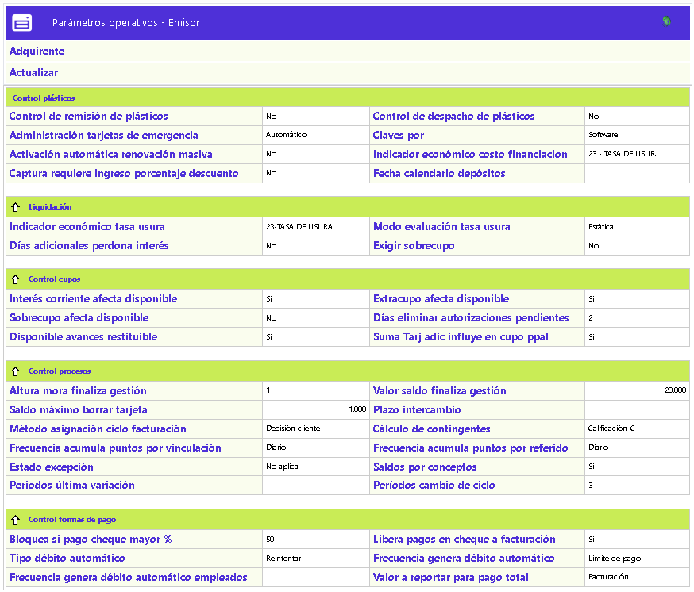
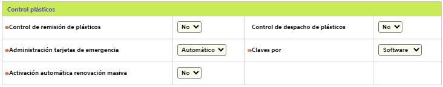
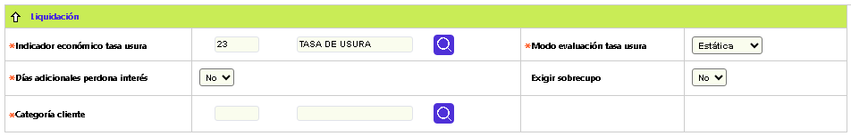
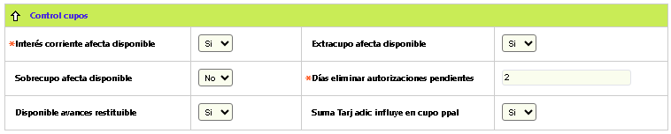
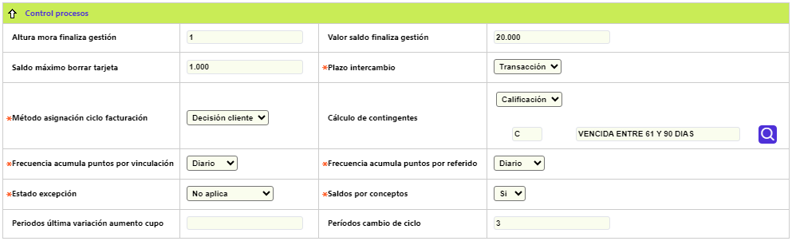
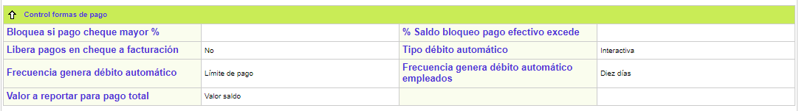
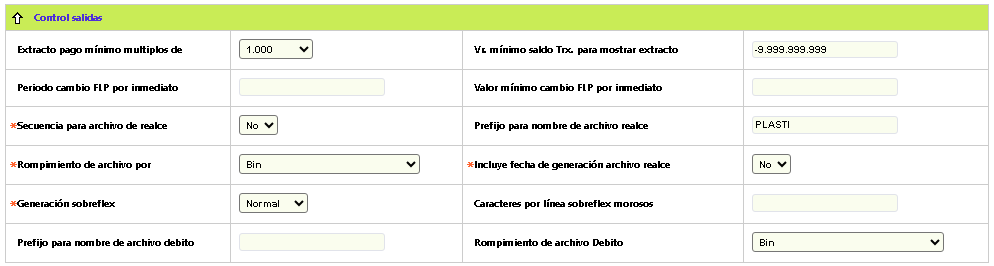
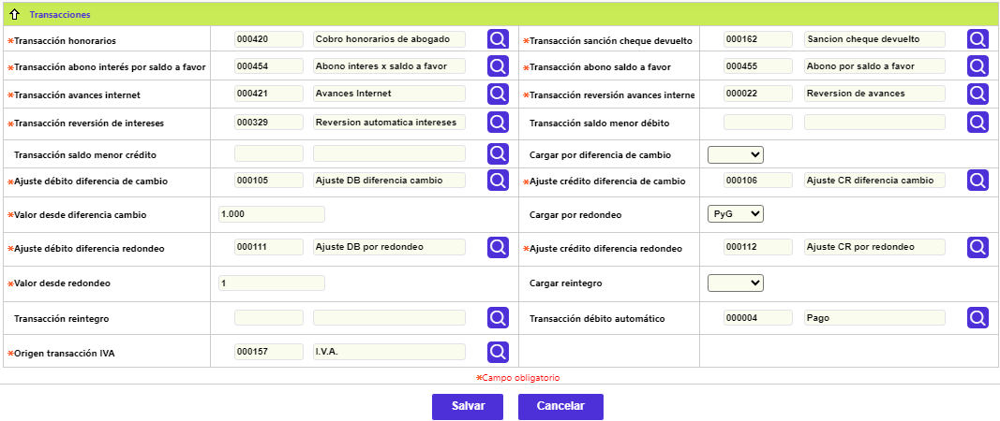

Parámetros operativos
Mediante esta función se habilita la consulta y mantenimiento de la tabla que contiene una variada gama de parámetros requeridos en diversos procesos, razón por la cual han sido agrupados dentro de una misma función.
El formulario inicial muestra el Detalle de todos los parámetros operativos correspondientes al Emisor, con las opciones Actualizar y Adquirente en la parte superior. Adicionalmente, también muestra a la derecha el globo con los parámetros de Localización Emisor .

Actualizar: Si el usuario invoca la opción Actualizar se despliega un formulario con los siguientes bloques para modificar: Control plásticos, Liquidación, Control cupos, Control procesos, Control formas de pago, Control salidas, y Transacciones.

Control de remisión de plásticos |
En este campo la entidad determina si activa o no el control de las remisorias de los archivos de realce, si, por ejemplo, los plásticos son realzados por un tercero. En caso afirmativo, esta etapa de control en Plásticos se convierte en obligatoria y para cada plástico se debe registrar información de remisión. |
Control de despacho de plásticos |
Campo en el cual la entidad determina si activa o no el control en la entrega de plásticos, es decir que, en el proceso de emisión se debe incluir la oficina o punto de entrega del plástico realzado. |
Administración tarjetas de emergencia |
Campo que posee lista de valores adjunta de la cual debe seleccionarse entre Manual o Automática, la manera como se van a administrar éste tipo de tarjetas y aplica en aquellas entidades que manejen el concepto de tarjetas de emergencia. Una tarjeta de emergencia es un número reservado que se suministra a Visa internacional o por Mastercard internacional, a la entidad, para poder reponer una tarjeta a un cliente que se encuentra en el exterior y perdió o le fue robada su tarjeta. En el primer caso se ingresan los números, uno a uno, asignados por la franquicia, en el último caso el sistema evalúa el parámetro señalado en el campo Número tarjeta emergencia en Bines de la opción Parámetros en el formualrio de Mercadeo, y ordena la asignación automática de números de tarjetas de emergencia hasta completar la cantidad allí señalada. |
Claves por |
Este campo posee una lista de valores adjunta de la que debe seleccionarse entre por software o hardware, la manera en que la entidad decide generar las claves o números de identificación personal. Si la selección es software, significa que a través del sistema OpenCard se generarán las mismas, mientras que hardware indica que la generación de éstas se hará a través de un sistema distinto al de OpenCard. |
Activación automática renovación masiva |
Campo en el cual al entidad determina si las tarjetas generadas mediante la renovación masiva son activadas automáticamente o no. En el último caso la activación de cada tarjeta se hará manualmente desde los parámetros de Solicitudes, o desde Plásticos. |

Indicador económico tasa usura |
Campo obligatorio, posee lista de valores poblada en la opción Indicadores económicos del grupo de Tablas de la entidad financiera o Cotizaciones corporativas, de la que se selecciona al indicador definido como tasa de usura. |
Modo evaluación tasa usura |
Este campo posee lista de valores adjunta con las opciones Estática y Ponderada; la primera evalúa la tasa de usura del día de facturación frente a la de interés corriente y toma la menor), mientras que la segunda evalúa la tasa de usura de todos los días del periodo frente a la de interés corriente y toma la menor. |
Días adicionales perdona interés |
Campo que cuando se encuentra activo indica que el sistema debe evaluar el campo Días gracia abonos definido en el tab Parámetros de la opción Productos de la opción de Mercadeo. |
Exigir sobrecupo |
Cuando este campo está activo indica que el sistema debe incluir dentro del pago mínimo el valor que por concepto de sobrecupo presente el saldo de la obligación a facturación. |
Tasa cambio facturación |
Este campo posee lista de valores de la que se selecciona la Tasa de cambio, que se tendrá en cuenta en el proceso de facturación. |
Tasa cambio diario |
Campo con lista de valores de la cual se selecciona la Tasa de cambio, a tener en cuenta en el proceso de actualización de saldos diarios. |
Tasa cambio pagos |
Este campo posee lista de valores adjunta de la que debe seleccionarse entre Diario o Facturación la tasa de cambio respectiva, para la conversión de los pagos de los tarjetahabientes en moneda extranjera. |
Asume comisión pagos |
Campo que posee lista de valores adjunta de la que debe seleccionarse entre Cliente o Empresa e indica si la comisión por cambio de divisas será asumida por el cliente o por la entidad. |
Permite devolución cuotas |
En este campo con lista de valores adjunta se debe seleccionar entre Si o No el sistema debe permitir el reintegro de cuota de manejo de las definidas en el tab del mismo nombre de la opción Definición de productos, cuando se ha cobrado anticipadamente a un cliente que cancela su producto. |
Categoría cliente |
Este campo cuenta con lista de valores poblada a través de la opción de Categoría clientes, de la cual debe seleccionarse aquella que por defecto el sistema asigna en el momento de la captura de clientes, la cual puede ser inclusive Sin categoría; el valor aquí registrado será el que por defecto aparecerá en el campo Categoría del tab Institucional de la opción Clientes existentes y/o nuevos al momento de crear un cliente en la base de datos. |
Categoría manejo |
Campo que posee lista de valores poblada a través de la opción de Categoría clientes, de la cual debe seleccionarse la categoría que por defecto el sistema asigna automáticamente una vez valide que el cliente posee dos productos para efectos de cobro diferencial de la cuota de manejo. |

Interés corriente afecta disponible |
Campo en el que la entidad señala si los intereses corrientes facturados son tenidos en cuenta o no al momento de calcular el disponible para cualquiera de los tres niveles (línea de crédito, tarjeta o cliente). |
Extracupo afecta cupo disponible |
Campo que de estar activo le indica al sistema que debe afectar el cálculo del disponible, realizado desde la Consulta tarjeta, reduciéndolo o disminuyéndolo en el monto que por concepto de extracupo utilizado presente los saldos del cliente. |
Sobrecupo afecta disponible |
Si este campo se encuentra activo le indica al sistema que debe afectar el cálculo del disponible, realizado desde la Consulta tarjeta, reduciéndolo o disminuyéndolo en el monto que por concepto de sobrecupo presente los saldos del cliente. |
Cupos adicionales influyen cupo principal |
Cuando este campo se encuentra activo le indica al sistema que el cupo individual asignado a cada una de las tarjetas extendidas que dependan de una empresarial o cabeza de familia no pueden exceder el cupo global fijado. En caso contrario dichos cupos son independientes y las extendidas podría alcanzar el mismo cupo de la principal o empresarial. |
Días eliminar autorizaciones pendientes |
Este campo obligatorio, admite cualquier valor numérico de máximo 2 dígitos, sin decimales. En este se define la cantidad de días calendario que deben pasar entre la solicitud de autorización y la eliminación de la misma, liberando el disponible cuando el movimiento no llega por canje. Cuando el cliente solicita una autorización, si es aprobada, se afecta el disponible del cliente en este monto. Este disponible se liberará con el cruce o eliminación de la autorización. |
Disponible avances restituible |
Lista de valores con las opciones Sí, No, y Nulo. |

Máxima altura mora para cambio oficina |
Campo numérico de 4 dígitos no obligatorio en el que la entidad señala la cantidad máxima de periodos en mora que la obligación puede presentar al momento de solicitarse el cambio de oficina de radicación del producto. |
Saldo mínimo levantar bloqueo refinanciación |
En este campo numérico de 12 dígitos 2 decimales, la entidad define el monto que como mínimo debe reflejar el saldo de la obligación que ha sido refinanciada para ser susceptible de levantársele dicho bloqueo. |
Altura mora finaliza gestión |
Este campo numérico de 2 dígitos, no obligatorio, aplica cuando una tarjeta que se encuentra en gestión de cobro, contiene la cantidad de periodos en mora que al ser alcanzados por la tarjeta, finaliza dicha gestión. |
Valor saldo finaliza gestión |
Campo numérico de 14 enteros y 2 decimales, no obligatorio, que aplica cuando una tarjeta que se encuentra en gestión de cobro, presenta como saldo de la obligación el valor aquí señalado, finaliza dicha gestión. |
Saldo máximo borrar tarjeta |
Campo numérico de 14 enteros y 2 decimales, obligatorio, en el que se registra el valor máximo que pueden presentar las tarjetas para poder ser levantadas por el proceso que las elimina de los maestros, tomando en cuenta que estando inactivas y los bloqueos que posean permitan su eliminación. |
Aplicación castigo |
Este campo posee lista de valores adjunta de la que puede seleccionarse entre Usuario o Regional la manera en que el sistema filtrará la información desplegada en la opción Castigo de cartera de la opción de Cartera y Contabilidad; en el primer caso mostrará todas las obligaciones que por parámetros arriban a este estado, mientras que en el segundo solamente mostrará aquellas que correspondan a la Regional a la que pertenezca el usuario de la base de datos que accede a dicha opción. |
Plazo vencimiento comprobantes |
Campo numérico de 2 dígitos, no obligatorio, en el que se indica el número de días que como máximo esperará, la entidad, para recibir respuesta de los contracargos presentados a las otras entidades. |
Plazo intercambio |
Este campo contiene lista de valores adjunta de la cual la entidad selecciona cómo se realizará la validación del plazo de las transacciones de intercambio. Si selecciona transacción, el manejo de alertas por plazos vencidos en intercambio utilizará el plazo definido en parámetros de la opción Orígenes de transacciones; si la selección es motivo indica que se tendrá en cuenta el plazo señalado en devolución definido en la misma opción. |
Días para evaluar vencimientos en contracargos |
Campo numérico de 2 dígitos no obligatorio en el que la entidad señala el número de días con que generará una alerta preventiva para que el usuario responsable de la gestión de contracargos resuelva las peticiones recibidas que aún no ha seleccionado como las respuestas de aquellos que la entidad ha presentado. |
Método asignación ciclo de facturación |
Campo con lista de valores adjunta de la cual debe seleccionarse entre Decisión cliente, Bin o Balanceo la forma en que debe asignarse el ciclo de facturación para tarjetas nuevas. En el primer caso se permite que el cliente escoja el ciclo, en el segundo, de acuerdo con el producto se asocia a un determinado ciclo, en el último caso y de acuerdo a la carga operativa se tratan de mantener los ciclos equilibrados cuantitativamente. |
Cálculo de contingentes |
El primer campo muestra un combo con las opciones Altura y Calificación, los cuales le permiten a la entidad marcar la opción que mejor se ajusta para el manejo de los intereses extracontables. El segundo campo (Calificación), una vez seleccionada cualquiera de las dos opciones del campo inmediatamente anterior, en este campo se registra la altura de mora o la calificación en la cual debe estar el producto para que los intereses tanto corrientes como de mora que se liquiden, se consideren como extracontables. |
Frecuencia acumula puntos por vinculación |
ampo que posee lista de valores adjunta de la cual debe seleccionarse entre Diario o Periodo la frecuencia con que se otorgan los puntos por clientes vinculados. |
Frecuencia acumula puntos por referido |
Este campo contiene lista de valores adjunta de la cual debe seleccionarse entre Diario o Periodo la frecuencia con que se otorgan los puntos por clientes referidos. |
Estado excepción |
Este campo es utilizado la mayoría de las veces en el ambiente de Estados Unidos. Permite definir algunas excepciones de la aplicación del método de cálculo de intereses las cuales aplicarán según el estado de excepción (Tab American) definido en la opción definición de productos del modulo de mercadeo. Las posibles opciones son: No Aplica, Estado Residencia, Estado Oficina y Estado correspondencia. |
Saldos por conceptos |
Al igual que el anterior, este campo también está diseñado para utilizarse en el ambiente de Estados Unidos y está relacionado con el Método de calculo de intereses. Permite definir si se realiza considación de saldos por sus diferentes conceptos y por los indicadores económicos. |
Periodos última variación aumento cupo |
Campo numérico de dos dígitos, no obligatorio, que contiene la cantidad de periodos (expresado en meses) que como mínimo deben haber transcurrido entre la última variación del cupo de crédito para poder permitir su modificación. |
Periodos cambio ciclo |
En este campo numérico de dos dígitos, no obligatorio, se indica la cantidad de periodos (de 30 días) que mínimo deben haber transcurrido entre el último cambio de ciclo o asignación inicial del mismo, para poder permitir su modificación. |
Origen Convenios |
Este campo de salida despliega el código y nombre definidos en la opción orígenes de transacciones correspondiente a convenios. |

Bloquea si pago cheque mayor % |
En este campo numérico de 3 posiciones enteras y 2 decimales, no obligatorio, se registra el valor porcentual definido por la entidad, que adicionado al cupo de la tarjeta constituyen un valor de referencia consultado por el sistema en el momento de liberar manualmente los pagos realizados en cheque; si dicho valor de referencia es superado se genera un bloqueo preventivo, para evitar fraudes. |
%Saldo bloquo pago efectivo excede |
Campo numérico que en un máximo de 3 enteros y 2 decimales, no obligatorio, contiene un valor porcentual definido por la entidad, que adicionado al saldo de la obligación constituyen un valor de referencia consultado por el sistema en el momento de aplicar los pagos realizados en efectivo; si dicho valor de referencia es superado se genera un bloqueo preventivo. |
Libera pagos en cheques a facturación |
Este campo permite señalar si la entidad aplica los pagos en cheque efectuados en la fecha de facturación como si fuesen en efectivo, con el fin de evitar enviar a mora a sus tarjetahabientes, independientemente de si la entidad tiene parametrizado un valor diferente a cero en el campo de Días plazo canje en la opción Estructura orgánica. |
Tipo débito automático |
Campo no obligatorio, posee lista de valores adjunta de la cual se puede seleccionar alguna de las siguientes opciones: Intercativa: a partir de la fecha límite de pago se generan los débitos todos los días, hasta la fecha de facturación y solo con la confirmación de cuentas corrientes se genera la transacción del pago en el sistema OpenCard. Una vez: sólo se genera el archivo de débitos automáticos en una fecha definida y con la confirmación se genera el pago en OpenCard. En firme: significa que no se espera confirmación de los débitos automáticos y sucede cuando las cuentas pueden sobregirarse. Este campo también puede ser nulo. |
Frecuencia genera débito automático |
Este campo no obligatorio, posee lista de valores adjunta de la cual puede seleccionar entre facturación o límite de pago, el momento en que se debe generar el débito automático a las cuentas corriente, rotativo o de ahorros de los tarjetahabientes que no son empleados de la misma entidad emisora de la tarjeta. |
Frecuencia genera débito automático empleados |
Campo no obligatorio, posee lista de valores adjunta de la cual se puede seleccionar entre facturación, mensual, quincenal, decadal o límite de pago, el momento en que, o fechas que sean coincidentes con la periodicidad de la nómina, se debe generar el débito automático a las cuentas de los tarjetahabientes empleados de la misma entidad emisora de la tarjeta. |
Valor a reportar para pago total |
Este campo no obligatorio, posee lista de valores adjunta de la cual se puede seleccionar si el valor a cancelar, pactado por el tarjetahabiente, pago total con cargo a cuenta, corresponde al Saldo de las obligaciones a su cargo liquidadas a la más reciente facturación o al valor del saldo al momento de generar el débito automático. |

Extracto pago mínimo múltiplos de |
Campo que posee una lista de valores adjunta, de la cual la entidad selecciona el múltiplo que aplicará para el redondeo del pago mínimo generado en el extracto del cliente. El propósito de este campo es el de generar información con cifras cerradas para evitar que la deuda del cliente quede en mora por valores mínimos dejados de pagar. Es importante aclarar, que este redondeo no significa ajuste al pago mínimo generado. |
Valor mínimo pago total generar extracto |
En este campo numérico de 14 enteros y 2 decimales, no obligatorio, se registra el monto mínimo que deben presentar los valores de pago total para que el sistema lo incluya dentro del proceso de generación de extractos. En caso contrario, los clientes que tengan una deuda inferior a dicho parámetro no generarán extracto. |
Período cambio F.L.P por Inmediato |
A través de este campo la entidad define, a partir de cuál período (expresado en meses) de mora se cambia en el extracto del cliente, la fecha límite de pago por la palabra INMEDIATO. |
Valor minimo cambio F.L.P por Inmediato |
En este campo la entidad define, el monto de pago mínimo a partir del cual se cambia en el extracto del cliente, la fecha límite de pago por la palabra INMEDIATO. |
Saldo a favor límite para generar extracto |
Campo numérico de 14 dígitos 2 decimales, no obligatorio en el que la entidad puede indicar el monto mínimo de saldo a favor que debe tener un tarjetahabiente, para que le sea generado extracto. Los clientes que presenten valores de saldo a favor inferiores al monto aquí definido, no recibirán extracto. |
Secuencia para archivo de realce |
Campo en el cual la entidad señala si desea asociar o no un número secuencial a cada archivo de realce para su identificación. Este parámetro tiene incidencia en la conformación del nombre del archivo de realce. Le indica al sistema si una secuencia hace parte del nombre del archivo de realce. Se creó como parámetro, para minimizar los cambios a nivel de programación. |
Prefijo para nombre de archivo de realce |
Campo alfanumérico de 6 posiciones, no obligatorio, dentro del que se posibilita asociarle un dato distintivo al nombre del archivo de realce, si deben llevar algún prefijo especial, para su identificación o administración. En este punto se define cual es el prefijo. Si no se registra información, el sistema asume que no es necesario dicho prefijo. |
Rompimiento de archivo por |
En este campo que posee una lista de valores adjunta se debe seleccionar la opción correspondiente, entre realizar el rompimiento o división del archivo de realce por Regional, Marca, Modelo, Producto, Bin, Tipo de solicitud, Con plástico, o la combinación entre estos. La regional es una de las divisiones dadas en la tabla poblada en Estructura orgánica del grupo de Tablas de la entidad financiera. La marca corresponde a las franquicias con las que opera la entidad, determinadas en la opción Franquicias. Modelo corresponde al patrón que se tomará para realzar la tarjeta, el modelo del plástico está previamente definido en la opción Modelos plástico del Núcleo. El producto está determinado por el Bin, segmento y grupo, previamente diligenciado en la opción Definición de productos. El Tipo de solicitud identifica la solicitud que se ha realizado por cada producto, las cuales están previamente definidas en la opción Parámetros. La opción Con plástico permite identificar las solicitudes que generan plástico, tomando el parámetro definido por la combinación entre la opción Parámetros y Productos. Adicionalmente, la entidad puede seleccionar de las combinaciones presentadas la opción proceso, foto, modelo y grupo, de tal manera que, proceso indica el origen de la solicitud, tomando valores de Masificación (M), si el proceso que generó la solicitud fue como consecuencia de lo definido en Programas comerciales; Diario (D), si la solicitud se generó como resultado de la operación diaria o Renovación ( R) si fue generada a través del proceso de renovación masiva. El campo foto indica si determinada solicitud genera plástico con foto, de acuerdo con lo definido en Productos. |
Incluye fecha de generación archivo realce |
En este campo la entidad indica si desea incluir o no la fecha de generación del archivo de realce para su identificación o administración. |
Generación sobreflex |
En este campo con lista de valores adjunta se debe seleccionar entre Normal que significa que el sofreflex se genera antes de la activación de la tarjeta, y Después cuando la generación de sobreflex se realizará después de la etapa de activación de la misma. |
Caracteres por línea sobreflex morosos |
En este campo numérico de 3 posiciones, no obligatorio, se define la cantidad de caracteres que se colocarán por cada línea del mensaje que se imprimirá en el sobreflex. Dichos mensajes están previamente definidos en la opción Sobreflex morosos. |

Transacción honorarios |
Campo con lista de valores poblada en la opción Orígenes de transacciones, de la cual se debe seleccionar la transacción original correspondiente a honorarios de abogados. |
Transacción sanción cheque devuelto |
Este campo posee lista de valores poblada en la opción Orígenes de transacciones del grupo de Tablas reservadas del Núcleo. Este campo, junto con el campo ORIGEN_SANC_CHEQ_DEV, identifica la transacción de sanción aplicada por cheque devuelto. Cuando un cheque de cliente es devuelto por una causal que implica aplicar sanción, este cargo se hace mediante éste código. |
Transacción abono interés por saldo a favor |
Campo con lista de valores poblada en la opción Orígenes de transacciones. Este campo, junto con el campo ORIGEN_ABONA_INT_SAL_FAV, identifica la transacción de abono de intereses por concepto de saldo a favor. De acuerdo a los parámetros, cuando un tarjetahabiente está guardando su saldo a favor como un ahorro, el sistema le genera intereses a favor, los cuales funcionan como un pago sobre la deuda de la tarjeta, y pueden si el cliente no tiene saldo, convertirse en saldo a favor. |
transacción abono saldo a favor |
Este campo posee lista de valores poblada en la opción Orígenes de transacciones del grupo de Tablas reservadas del Núcleo. Este campo, junto con el campo ORIGEN_ABONA_SAL_FAV, identifica la transacción de abono al tarjetahabiente, cuando se libera el saldo a favor. En éste punto el saldo a favor del cliente ya no es retenido, se genera una transacción cuyo concepto es pago (el código está definido por éste campo). |
Transacción avances internet |
Campo con lista de valores poblada en la opción Orígenes de transacciones. Este campo, junto con el campo ORIGEN_AVANCES, identifica la transacción de avances, cargada al cliente cuando desde Internet se hizo una solicitud de avance con abono a cuenta corriente. Cuando el Abono es confirmado se genera la transacción de avance internet identificada por éste código. |
Transacción reversión avances internet |
Este campo posee lista de valores poblada en la opción Orígenes de transacciones del grupo de Tablas reservadas del Núcleo. Este campo, junto con el campo ORIGEN_REVER_AVANCES, identifica la transacción de reversión de avances, que debe aplicarse cuando el abono a cuenta no pudo ser efectuado. |
Transacción reversión intereses |
Campo que posee lista de valores poblada en la opción Orígenes de transacciones, de la cual se debe seleccionar la transacción original correspondiente, siendo el código que identifica la transacción con que aparece en el extracto el reintegro de intereses de las transacciones reversadas que los hayan generado. |
Transacción saldo menor débito |
En este campo que posee lista de valores poblada en la opción Orígenes de transacciones del grupo de Tablas reservadas del Núcleo, se debe seleccionar la transacción original correspondiente, para cuando el cliente presenta saldos menores débito, acorde a lo definido en los Parámetros de la Definición de productos y que van a ser trasladados de la tarjeta a una cuenta contable. |
Transacción saldo menor crédito |
Campo que posee lista de valores poblada en la opción Orígenes de transacciones, de la cual se debe seleccionar la transacción original correspondiente, para cuando el cliente presenta saldos menores crédito, acorde a lo definido en los Parámetros de la opción Productos y que van a ser trasladados de la tarjeta a una cuenta contable. |
Cargar por diferencia de cambio |
Campo en el que la entidad define si el acumulado de los ajustes generados por diferencia de cambio se cargarán a los tarjetahabientes o los asume la entidad. |
Ajuste débito diferencia en cambio |
Campo que posee lista de valores poblada en la opción Orígenes de transacciones del grupo de Tablas reservadas del Núcleo, de la cual se debe seleccionar la transacción original correspondiente. |
Ajuste crédito diferencia en cambio |
Este campo posee lista de valores poblada en la opción Orígenes de transacciones, de la cual se debe seleccionar la transacción original correspondiente. |
Valor desde diferencia cambio |
Campo numérico de 14 enteros y 2 decimales, obligatorio, en el que se registra el monto mínimo acumulado que debe presentar el tarjetahabiente, por este concepto, para que el sistema genere la transacción correspondiente. |
Cargar por redondeo |
En este campo la entidad define si el acumulado de los ajustes generados por redondeo se cargarán a los tarjetahabientes o los asume la entidad. |
Ajuste débito diferencia redondeo |
Campo que posee lista de valores poblada en la opción Orígenes de transacciones del grupo de Tablas reservadas del Núcleo, de la cual se debe seleccionar la transacción original correspondiente. |
Ajuste crédito diferencia redondeo |
Este campo posee lista de valores poblada en la topción Orígenes de transacciones, de la cual se debe seleccionar la transacción original correspondiente. |
Valor desde redondeo |
En este campo numérico de 14 enteros y 2 decimales, obligatorio, se registra el monto mínimo acumulado que debe presentar el tarjetahabiente, por este concepto, para que el sistema genere la transacción correspondiente. |
| Cargar reintegro | Campo que posee lista de valores adjunta de la que se puede seleccionar entre Cliente o GyP el destino de las reversiones de cuotas de manejo que correspondan a la modalidad anticipada y cuyos productos se cancelen antes de causarse la totalidad del periodo de tiempo cubierto por el pago de dichas cuotas. |
| Transacción reintegro | Este campo posee lista de valores poblada en la opción Orígenes de transacciones del grupo de Tablas reservadas del Núcleo, de la cual se debe seleccionar la transacción original correspondiente. |
| Transacción débito automático | Campo obligatorio, posee lista de valores poblada en la tabla de Orígenes de transacciones de las Tablas reservadas del Núcleo. Este campo junto con el campo ORIGEN_PAGO_DB_AUTOM, el cual no se despliega, permite definir el código de transacción que se generará al tarjetahabiente cuando el débito automático pudo ser aplicado. Debe ser una transacción cuya naturaleza corresponda a un pago. Este parámetro es muy importante ya que con éste código de transacción se generará el Movimiento del tarjetahabiente. |
| Origen transacción IVA |
Campo con lista de valores poblada en la opción Orígenes de transacciones, de la cual se debe seleccionar la transacción original correspondiente, siendo el código que identifica la transacción asociada al Impuesto del Valor Agregado calculado y liquidado sobre las transacciones que aplique. |
Localización Emisor | Ir a Adquirente | Localización Adquirente